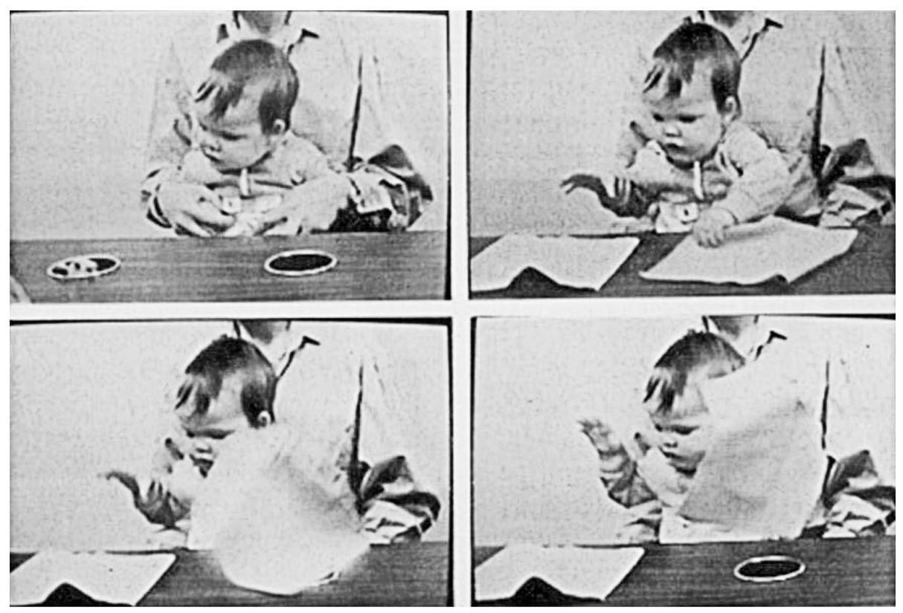

心理学实验之所以会想要确认对婴儿来说是不是“看不见就不存在”，是因为儿童心理学中有一个很有影响力的理论，即婴儿必须通过学习才能建立客体永久性的概念。让·皮亚杰（见第七章）认为，婴儿在18个月之前都不完全具备客体永久存在的概念。一个重要的实验测试了婴儿会在哪里搜寻物品。皮亚杰演示了，即便是10个月大的婴儿也会在找隐藏的物体时找错地方。在皮亚杰著名的“A非B”实验中，婴儿看到一个实验员反复地将一个很诱人的物体（例如一串钥匙）藏在一块布底下（“地点A”，见图5）。每次实验员藏好以后，婴儿都可以把布掀开并拿走钥匙。然后婴儿再看着实验员将钥匙藏在一块新布底下（“地点B”）。令人惊奇的是，多数婴儿都会再次掀开地点A的布，因而没能找到钥匙。当隐藏地点是透明的盒子时，婴儿还是犯了同样的错。尽管在地点B的盒子里能够看见钥匙，婴儿仍旧会打开地点A的盒子。

图5 在A非B实验中，婴儿注视着地点B，但仍在地点A搜寻
心理学家提出了许多不同的理论来解释这种搜寻行为。一个是皮亚杰原创的理论，叫作不成熟的客体知识说。其他的理论包含大脑不成熟说——大脑各系统之间尚未成熟的连接会阻碍婴儿了解隐藏地点（地点B）及控制行为（把手伸向地点A）——和动作持续说（婴儿无法抑制地习惯性将手伸向地点A）。但是，也许是其中最有趣的一个近期理论指出，在所有的实验中婴儿都是活跃的社会伙伴。在经典的A非B实验中，实验员会一边和婴儿进行眼神交流，一边说话（“你好，小婴儿，看这里”）。这种信号通常意味着“在这种情况中，我们这么做”（即将手伸向地点A）。为了测试这种“教学”说是否有效，实验员创造了一个“零社交的”A非B测试。测试中，在没有其他人可见的情况下，婴儿看到了A和B两个地点（实验员坐在了一块幕布后面）。一只手从幕布后面伸出来，反反复复地将物体藏在地点A。婴儿数次成功找到物体后，这只手再次出现，将物体放在了地点B。这一次，在地点B的第一次测试中，超过半数的婴儿成功地从新地点拿到了藏起来的物体。因此，在没有社交暗示并且只关注隐藏情形的空间安排中，婴儿就很少会去错误的地点搜寻了。